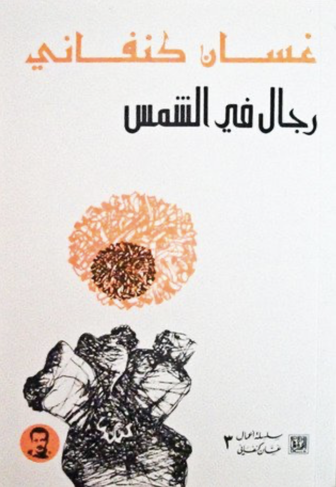

The cover of the Rigal fil Shams or Men in the Sun, first published in 1963, this is the cover of the second edition published in Morocco 1980
This is part of the #100ArabNovels project, where I try to revisit the Arab Writers'Association's list of 100 most significant novels, as part of trying to understand the Arab imaginary post-2011
No one has written a more searingly, ebullient, brash, novel completely pivoted on one central image, the burning heat of the sun, as hauntingly as Ghassan Kanafani (1936-1972) did in his debut novel, Rigal fil Shams or Men in the Sun (1963). From the very start to finish, one is overwhelmed by the presence of a blinding light and oppressive heat, very much mirroring the burning truth of the post-Nakba tragedy, that haunts the Palestinians the same way the sun chases the unforgiving sand dunes of Iraq and Kuwait. Its almost cinematic, its visual immediacy is uncanny. Kanafani is a visual writer, before being anything else. And it renders itself to film, effortlessly (the story was made into a film, al-Makhdoun or The Dupes directed by Tawfik Saleh and produced in Syria in 1972, itself considered a masterpiece of Arab cinema).
Kanafani's novella (a mere 93 pages) tells the story of three Palestinian men and their reality in the post-Nakba, as they try to find ways to survive and make a living, after giving up on the struggle in a way. The novel deals with a reality that continues to haunt the Palestinians till today, the struggle for independence and autonomy and the struggle to make a living. And at times they seem to be placed at odds with each other. In Kanafani's novella, the three protagonists end up being pulled to the new frontier of petro-economies of the Gulf and the huge impact they had on the entire region, not just Palestine. The GCC countries, for decades, would absorb millions of skilled, semi-skilled and low-skilled labour nearly from everywhere from Morocco to Bangladesh. And the promise of quick money would lure millions, including the three stateless, desperate Palestinian men of Kanafani's novel to the unforgiving desert, eventually to their tragic death.
Kanafani constructs a threefold schema: a story of origin, rootedness in a homeland (symbolized by fertile earth, lush olive groves of Palestine), limbo/displacement (symbolized by squalid conditions of refugee camps and rise of informal, quasi-illegal economy) and finally exile/death (symbolized by the protagonists' perilous journey through the Iraq-Kuwait desert to find work). Kanafani contrasts the temperate climate of Palestine, its fertile orchards with the arid, desolate, sun-baked deserts of Iraq and Kuwait. One immediately senses the not so subtle vulnerability that besets the Palestinians the moment they were forced out of their homeland, into the scorching sun of the Gulf countries. A vulnerability that is exacerbated by the statelessness of the Palestinians and their desperation to get to countries like Kuwait to be able to eke out a living to support their families back in the refugee camps. Kanafani doesn't spare his most indignant moral outrage as to how other Arabs, in this instance Iraqis and Kuwaitis, use this vulnerability to subject Palestinians to all kinds of horrors, beginning with human trafficking, all the way to actual killing (intentionally or unintentionally by leaving them in the desert for example to fend for themselves or transporting across borders them in inhumane conditions).
The condemnation of human trafficking and using the desperation of the Palestinians still holds today but this time exemplified by what is happening in Syria, and once again the Gulf's odd response to the Syrian refugees. The GCC countries do not recognize the category refugee and are not signatory to the international conventions of refugee rights and statelessness (1951 UN Refugee Convention), Syrians who were able to resettle in the GCC countries, were given work visas or tourist visas but not recognised as 'refugees' (the rationale behind is bewildering because it claims to preserve their dignity, but at the same time, refuse to recognize the reason behind their displacement). The GCC countries have donated to Syrian relief, however, less than their European and American counterpart (often maligned as 'out-of-pocket' or 'checkbook' diplomacy).
But Kanafani's invective against other Arabs and specifically the GCC countries, is not just about a technicality (recognising a refugee or not) or lack of generosity. But its about exploiting the extreme vulnerability of the Palestinians to subvert the law and make money out if it, at the expense of the lives and bodies of those displaced, stateless, Palestinians. Kanafani's ingenuity is precisely that he did not dwell on Palestine being an Arab issue, but rather the actual treatment of Palestinians by other Palestinians and other Arabs, their realities and how they are dealt with by Arab countries, in something as basic as trying to make a living, that reveals the limits of so-called politics of solidarity or the rhetoric of Palestinian liberation (or in this case, the failure of such rhetoric and its hollowness).
Kanafani could have used a more complex characterization, his characters feel as if they have been shoved into a scene, that is brilliantly composed, but they themselves appear a bit flat and two-dimensional. His focus to create an atmosphere, literally, a very sharply, visually defined scene, comes at the expense of his characters sometimes. But the ingenuity of Kanfani is that he managed to break with tired and trite symbols of Palestinian resistance and liberation, and infuse them with such vitality, with intensity, they metaphorically and physically, burn through the very bodies of his protagonists.
It is no mean feat to strip a narrative to its essential parts, preserving a poignant, sense-memory aspects, and manage to imbue that with scalding outrage at the futility of the politics surrounding such narrative. Here is an innate sense of drama, that understands the limits of time versus action and the magic of brevity and narrative condensation. Fifty seven years on and it still stings, to read Kanafani's novella, and feel the burning truth of Palestinian devastation.
*The novel was translated to English by Hilary Kilpatrick and published by Three Continent Press in 1988 (and later reissued by Lynne Rienner Publisher in 1999)